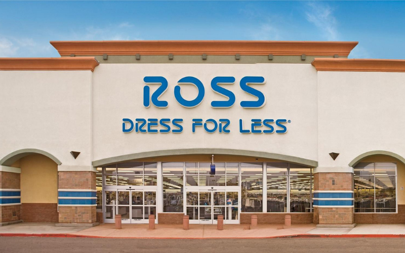
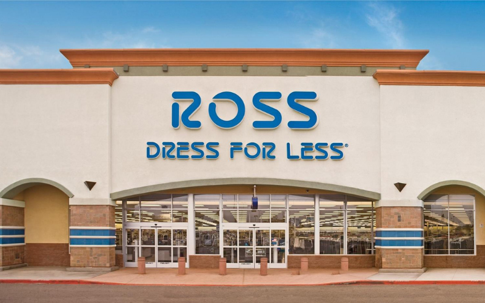
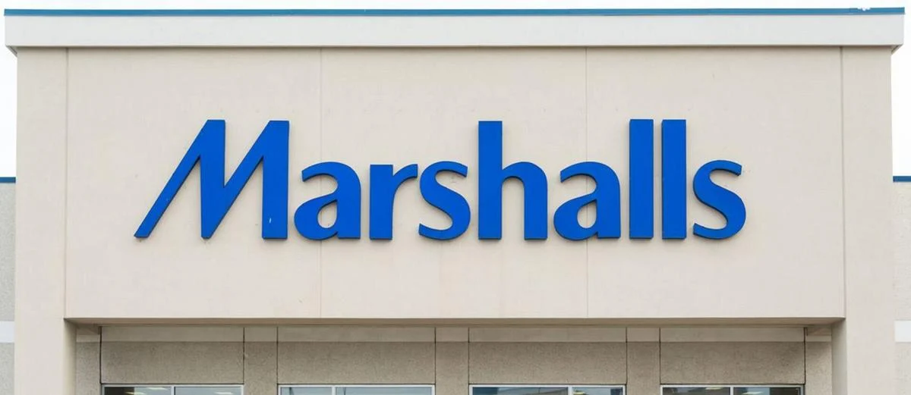
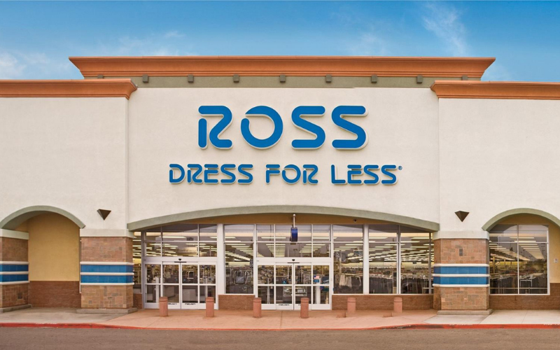
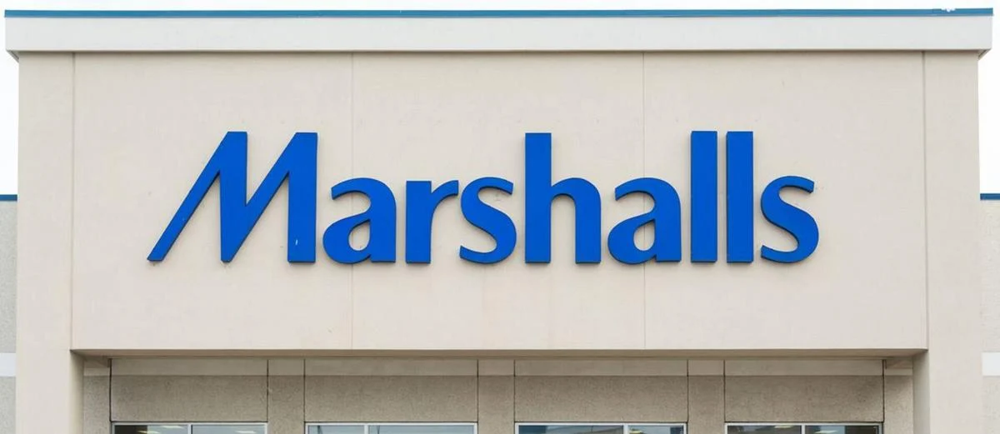

Robert Flores
Hello, my name is Robert Flores. I am 19 years old and I attend the University of California Riverside. I am majoring in psychology, and plan to become a child psychologist. I come from a family of 6, with 2 boys and 2 girls. I am the eldest of them all. I was born and raised in Riverside and also raised in Imperial County and in Moreno Valley. I've been in 7 California schools, all over the IE and in lower California. I have connections with many friends and co-workers from all over California and from all over the world because of my different schooling locations and my past jobs I’ve had. My past jobs have been beneficial in building my professional experience in different careers, to benefit me in the future.
My current professional experience ranges from the food industry to the retail industry. I began working in the food industry at the age of 16, which help build my communication skills and helped to improve my work ethic. Which helped me when I transitioned into being a retail associate. Following company guidelines, and expectations and learning something new every day gave me a strive that resulted in me being at the top of the class in every workspace.
In the food industry, I prepared fast, safe, good-tasting food for customers while I was a cook, and as a cashier, I was able to do multiple tasks at once in order to keep the business running efficiently. In this industry (as well as in retail) I was able to professionally deal with situations involving customers, which included having good customer service skills and good de-escalation of issues skills. Practice in this would be very important and detrimental to my future for working with different people of different pasts and personalities would arise in my workspace. Being able to talk to them correctly, would be vital.
In the retail industry, I worked as a Loss Prevention (LP) associate and a regular retail associate/cashier. Working as an LP helped with following company guidelines as I would teach other associates, as well as communication skills with different employees and customers. As LP, second to management, I was able to connect with managers, district managers, and corporate members of all kinds to build and ensure the fullest potential the company has to offer to the community. As a regular retail associate/cashier, I was able to practice working efficiently and creating a safe and clean environment for our customers. I was able to build nice and friendly conversations with many customers every day, expanding my talking skills as well. As well as expanding my kindness and respectfulness to my community every day.
Currently, I work at Marshalls, a retail company and I attend school 2 days out of the week and do homework whenever I can. I try to squeeze in time for the family throughout the week as well. I am a junior in college and plan to graduate by 2025-26.
Experience
Company: Marshalls
• Implemented and grew in required communication skills.
• Effiecently aided customers with any needs.
• Kept a clean and safe environment for customers.
Company: Ross
• Helped check out customers while using good customer service.
• Helped maintain a safe and secure environnment for my community as well as a clean shopping space.
Company: Mcdonalds
• Prepared safe food of satisfactory to customers.
• Worked efficently under short time windows to keep buisness running.
• Provided good customer service at the window and inside.
• Helped maintain a clean work/eating space for co-workers and my community.
Education
UC Riverside
Moreno Valley Community College
Vista Del Lago High School
Portfolio
 


